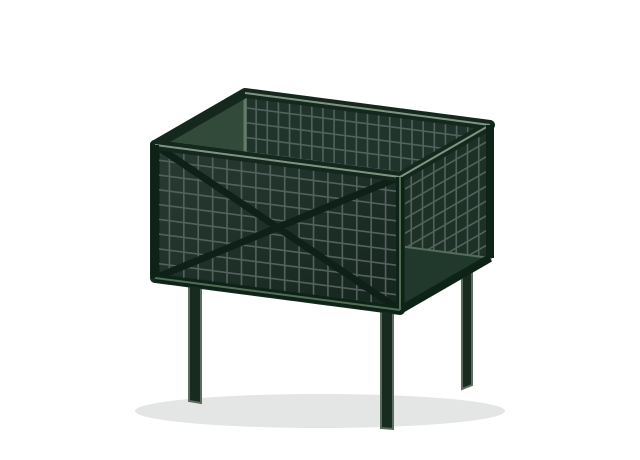
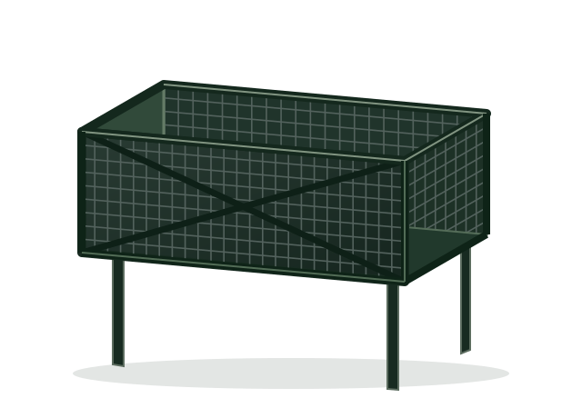
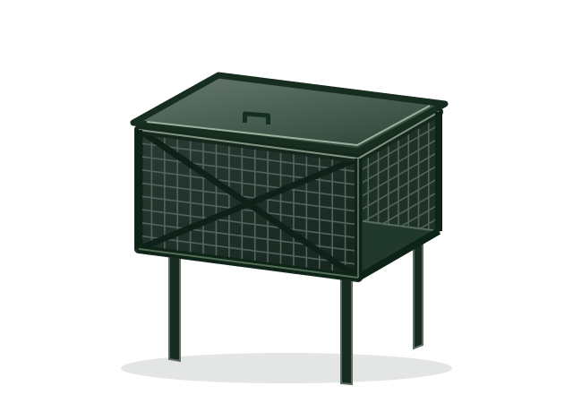
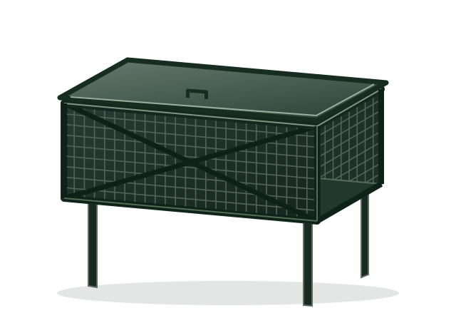

Sin tapa

COMPACTO · SIN TAPA
Canasto de 60 cm
- Frente
- 0,60 m
- Ancho / profundidad
- 0,50 / 0,50 m
- Altura total
- 1,50 m
$160.000 Precio de referencia
Consultar modeloFabricación e instalación
Canastos de basura metálicos en Buenos Aires. Elegí el tamaño, sumá una tapa y consultá la instalación en tu localidad.

01 / Elegí tu canasto
Compará tamaño y tapa de un vistazo.
Precios de referencia en pesos: confirmá vigencia, entrega e instalación para tu localidad.

COMPACTO · SIN TAPA
$160.000 Precio de referencia
Consultar modelo
COMPACTO · CON TAPA
$180.000 Precio de referencia
Consultar modeloMÁS FRENTE · SIN TAPA
$230.000 Precio de referencia
Consultar modelo
MÁS FRENTE · CON TAPA
$250.000 Precio de referencia
Consultar modeloLas imágenes son esquemas orientativos, no fotografías del producto.
02 / Del modelo a tu vereda
Estructura metálica reforzada y trabas de seguridad en las patas. Consultá la colocación y el precio final según tu zona.
60 o 100 cm de frente, con o sin tapa. Las medidas están en cada ficha.
Confirmá cobertura, costo de entrega e instalación antes de coordinar.
Consultá disponibilidad y medios de pago, incluyendo Mercado Pago.
Campana · Adrogué · González Catán
03 / Antes de elegir
Lo que necesitás saber para preparar tu consulta.
Los modelos se ofrecen con instalación. Confirmá el alcance, la cobertura y el precio final para tu localidad antes de coordinar.
Hay dos medidas de frente: 60 y 100 cm. Los cuatro modelos tienen 50 cm de ancho, 50 cm de profundidad y 1,50 m de altura total. Revisá el espacio disponible para elegir.
Sí. Tanto el modelo de 60 cm como el de 100 cm tienen una versión sin tapa y otra con tapa.
Hay envíos a domicilio en Buenos Aires y opción de despacho por Correo Argentino al resto del país. Consultá costo y condiciones para tu destino.
Los precios publicados son de referencia. Consultá el valor vigente de tu modelo, los costos de entrega e instalación y las opciones de pago disponibles, incluyendo Mercado Pago.
04 / Damos el próximo paso
Elegí un modelo y contanos dónde lo necesitás para consultar precio, entrega e instalación.
El número del negocio todavía no está disponible. Podés preparar y copiar tu consulta; no se envía desde esta página.